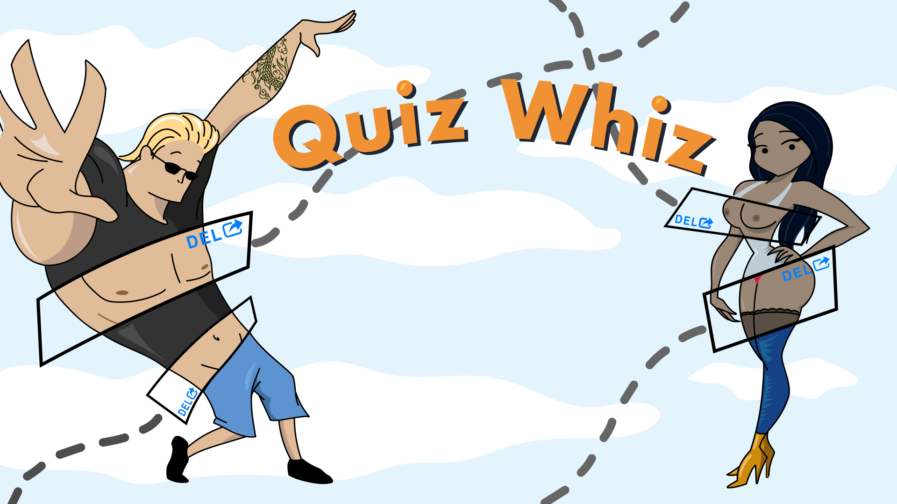

Tema 4 - Animation
I dette tema blev vi introduceret til animationer i browseren. Dette gjorde vi gennem udviklingen af et simpelt spil, hvor vi selv skulle ideudvikle og skitserer spillet, og derefter programmere det.
Efter nogle idegenereringsøvelser, fandt jeg på en stil og ide, og begyndte herefter på at skitserer baggrund og ui elementer, samt det udvidet styletile. Skitserne blev herefter rentegnet i Illustrator vha. shapes og pen-tool som vektorgrafik, for at sikre, at grafikken kunne skalere op og ned til alle skærme uden at ødelægge kvaliteten af grafikken.
Herefter blev jeg introduceret til javaScript, aktivitetsdiagrammer og statemachinediagrammer. Aktivitetsdiagrammer beskriver de handlinger og beslutninger der sker i løbet af spillet. Statemachinediagram fortæller hvad der sker i hver state spillet er i, og blev brugt til at opbygge javaScript med, hvor de forskellige states blev til funktioner.
Spillet
04.04.01 - Animations-opgaven

Egen animation
04.01.04 - Assetliste og designdokumentation
Assetliste


Gruppeopgave
04.04.01 - Projekt: Billeddeling
I denne opgave skulle vi lave endnu et spil fra bunden, men denne gang i grupper, til hjemmesiden PrivatSnak, med fokus på billeddeling på nettet i målgruppen 13-15 år.
Her blev vi introduceret til arbejdsmetoden SCRUM, hvilket betød, at hver morgen startede vi med en daily SCRUM, hvor man stod op og fortalte hvad man hver især har lavet, og hvad man vil arbejde på i løbet af dagen. Derudover blev vi også introduceret til Trelloboard, som kan bruges til at overse de tasks man skal lave, er i gang med, færdige med, og dem man ikke kan komme videre med, samt burndown charts, for at se, hvor mange tasks man har i løbet af hver dag.
Designmæssigt ville vi gerne ramme målgruppen 13-15 år, og dette gjorde vi ved at lave 3 moodboards og sketches baseret på hver deres cartoon, og så interviewe og test på en person fra målgruppen for at se, hvad de bedst kunne lide. Derfor blev vores design baseret på Johnny Bravo.
Da formålet med spillet var at få de unge til at tænke og sende dem videre til Privat Snak, lavede vi et quiz spil. Her kunne man både teste sin viden, men også lære noget, og så til sidst blive sendt videre til Privatsnak.dk for lære mere, eller hvis man har nogle spørgsmål. Derudover lavede vi også en mockup af en Facebook annonce, der leder hen til spillet.
Til kodningen af spillet begyndte vi igen med aktivitetsdiagram og statemachinediagrammer, hvilket især var nyttigt når man er flere der koder sammen.
Som afslutning holdte vi fernisering, der fungerede som test af vores spil. Her fik vi blandt andet indsigterne om, at vores design ramte målgruppen godt, og konceptet med en quiz var god, fordi de faktisk blev overrasket over noget af det de lærte. Dog fik vi også indsigten, at der var meget tekst at læse i forhold til det var lavet til målgruppen 13-15 år.
